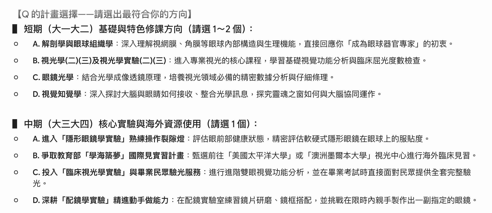

鳳新高中 ｜ 課程諮詢教師 ｜ 114 學年
升學輔導
工具分享
陪高三學生走過完整一年的實務工具——
從學習歷程到二階備審，每個時機都有對應的支援。
Second Semester｜下學期
鳳新高中 ｜ 課程諮詢教師 ｜ 114 學年
陪高三學生走過完整一年的實務工具——
從學習歷程到二階備審，每個時機都有對應的支援。
在三次模擬考完成之前，協助學生整理學習軌跡、找出落點方向
當學生不知道怎麼整理學習歷程時，Yory 提供有系統的引導架構幫助產出——而且有提供清寒學生免費名額。
 ▾ 點擊展開更多截圖
▾ 點擊展開更多截圖

AI 內容評鑑：根據個人寫作提供改善建議，對準科系需求

學習歷程自述撰寫介面：P、Q 段引導架構，可直接在線上完成

清寒學生免費名額：持中低收入戶證明即可申請，Email 至 info@yory.school
陳琬琳老師製作
高三同學考完三次模擬考後的自我檢視工具，幫助確認考前應衝刺的學科。

從繁星查詢到備審資料完成，每個關鍵節點都有工具支援
查詢各校系歷年繁星錄取標準，協助學生與老師快速評估可能落點，不用一頁一頁翻 PDF。

申請入學二階報名期間，學生常常搞不清楚每個校系要繳什麼、截止時間是什麼——小幫手幫大家快速整理所有報名資料。
陳琬琳老師製作
協助學生在備審準備過程中找到自己的亮點，讓「覺得自己很普通」不再是卡關的理由。
▸ 講座示範用指令｜選一個學生類型，複製後貼入 Gem，整理為【表一】
AI 搜集整理 4 項目標校系關鍵資訊，協助學生快速掌握人才特質、資源、課程與職涯方向，找出對位亮點。
▸ 講座示範用指令｜選一個學生類型，複製後貼入空白Gemini頁面，整理為【表二】
協助學生完成申請入學最重要的兩份文件——多元表現綜整心得與學習歷程自述。
前置作業完成～最終 STEP 4 將再擇期分享

▸ 講座示範用指令｜選一個學生類型，複製後貼入 Gem，整理為【表三】
 教師操作手冊下載｜請搭配以上 AI 工具
教師操作手冊下載｜請搭配以上 AI 工具

掃 QR Code 直接開啟，或是截圖存起來